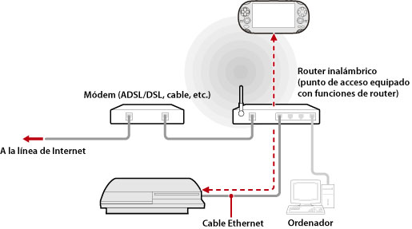

Red > Utilización de la función de uso a distancia (a través de un punto de acceso)
Utilización de la función de uso a distancia (a través de un punto de acceso)
Conecte el sistema PS3™ a un punto de acceso mediante un cable Ethernet. Utilice la función de conexión de red inalámbrica de un dispositivo que admite el uso a distancia, como un sistema PS Vita o un sistema PSP™, para conectarse al sistema PS3™ a través del punto de acceso.
Ejemplo de configuración común

Notas
- Un router inalámbrico es un dispositivo que añade funcionalidad de punto de acceso a un router. Un punto de acceso es un dispositivo que permite establecer una conexión con una red de forma inalámbrica. Un router es un dispositivo que se utiliza para compartir una conexión de Internet entre varios dispositivos.
- Un módem puede estar equipado con funcionalidad de router. Conecte el sistema PS3™ a un dispositivo equipado con funcionalidad de router.
- Si tanto el punto de acceso como el módem están equipados con funcionalidad de router, desactive dicha funcionalidad en uno de los dispositivos. El sistema PS3™ y el dispositivo que admite la función de uso a distancia deben estar conectados dentro de la misma red. Si dos o más routers se están utilizando al mismo tiempo, el sistema PS3™ y el dispositivo pueden estar conectados en redes diferentes y no podrá utilizar la función de uso a distancia.
Preparación para el uso (sistema PS3™ y el dispositivo que admita la función de uso a distancia)
Para utilizar la función de uso a distancia por primera vez, debe registrar (emparejar) el dispositivo que admite el uso a distancia, como un sistema PS Vita o un sistema PSP™, con el sistema PS3™. Para registrar (emparejar) el dispositivo, seleccione  (Ajustes) >
(Ajustes) >  (Ajustes de uso a distancia) > [Registrar dispositivo].
(Ajustes de uso a distancia) > [Registrar dispositivo].
Preparación para el uso (dispositivo que admite la función de uso a distancia)
Cree una conexión de red para conectar el dispositivo a un punto de acceso. Si el dispositivo ya cuenta con una conexión de red guardada, no tiene que crear una nueva. Para obtener más información acerca de la creación de una conexión de red en el dispositivo, consulte la guía del usuario del dispositivo.
El uso a distancia en un sistema PS Vita
1. |
En el sistema PS Vita, toque |
|---|
 (Uso a distancia de PS3) > [Inicio].
(Uso a distancia de PS3) > [Inicio].2. |
En el sistema PS3™, seleccione |
|---|
 (Red) >
(Red) >  (Uso a distancia).
(Uso a distancia). 3. |
En el sistema PS Vita, toque [Conectarse mediante una red privada]. |
|---|
El uso a distancia en un sistema PSP™
1. |
En el sistema PS3™, seleccione |
|---|---|
2. |
En el sistema PSP™, seleccione |
3. |
Seleccione [Conectarse a través de una red privada]. |
4. |
En la lista de conexiones, seleccione la conexión al punto de acceso que vaya a utilizar para el uso a distancia. |
 (Uso a distancia).
(Uso a distancia).Notas
- La función de uso a distancia puede utilizarse dentro del alcance de la señal del punto de acceso.
- Si activa el ajuste de inicio a distancia en el sistema PS3™, puede configurarlo para que se encienda automáticamente (Wake on LAN). Si desea obtener más información, consulte (Ajustes) > (Ajustes de uso a distancia) > [Inicio a distancia] en esta guía.
- Durante el uso a distancia, si va a la pantalla de otra aplicación, la conexión de uso a distancia se cierra después de 30 segundos.